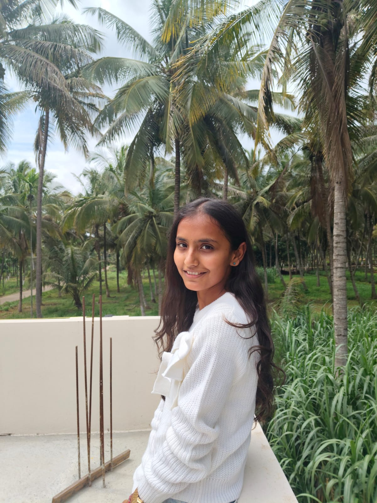

PORTFOLIO • 2026
Hi, I'm Chandana.
Welcome to my world.
A Computer Science Engineering student who enjoys learning new technologies, exploring ideas and turning curiosity into skills.
CSEMy course
RITMy college
HassanMy place

YOUR PHOTO
Save your picture as
photo.jpg
photo.jpg
a little
about me ✿
about me ✿
01 / GET TO KNOW ME
Learning today.
Growing every day.
I am studying Computer Science Engineering at Rajeev Institute of Technology. I am interested in building my technical knowledge and improving my skills step by step.
A closer look at my journey →02 / EXPLORE